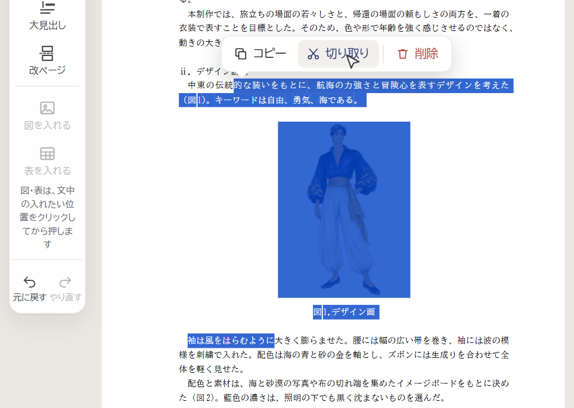

紙面をマウスでなぞると、段落や図をまたいで選べるようにしました（パソコン）。いまは Ctrl+C（コピー）・Ctrl+X（切り取り）・Delete（削除）、書く欄で Ctrl+V（貼り付け） で使えます。
キーを知らない学生のために、ボタンをどこに出すかを1つ選んでください（絵は本物のツールで、選んだ所の色も本物です）。
選んだ文のすぐ上に出る（スマホの文字選びと同じ形）。
よいところ図・表を選んだときの「この図」「この表」と同じ所に出る。貼り付けは「この段落」に。
よいところ選んだ所で右クリックすると出る。
よいところ